Marzo 2026
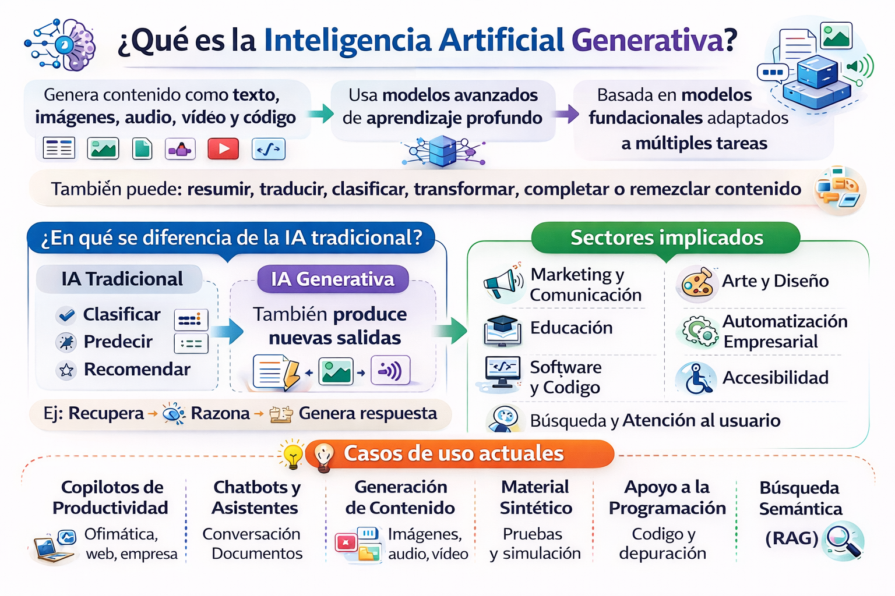
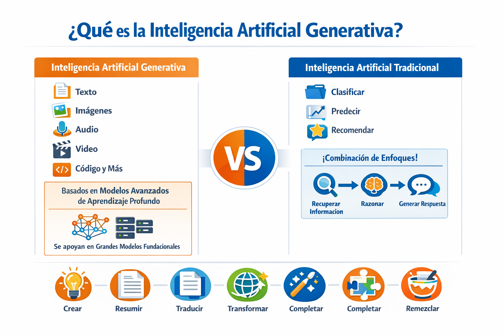
La Inteligencia Artificial Generativa engloba sistemas capaces de crear texto, imágenes, audio, vídeo, código y otros tipos de contenido a partir de instrucciones, ejemplos o datos de entrada.
Se basa en modelos avanzados de aprendizaje profundo entrenados para identificar patrones, estructuras y relaciones presentes en grandes volúmenes de información.
En la práctica, buena parte de la Inteligencia Artificial Generativa actual se sustenta en modelos fundacionales: modelos de gran tamaño y versatilidad que después pueden adaptarse a muchas tareas diferentes.
No se limita a “crear desde cero”: también puede resumir, traducir, clasificar, transformar, completar o remezclar contenido ya existente.
La Inteligencia Artificial más tradicional suele orientarse sobre todo a clasificar, predecir o recomendar, mientras que la Inteligencia Artificial Generativa añade la capacidad de producir nuevas salidas con apariencia original y coherente.
En muchos sistemas modernos ambos enfoques conviven: por ejemplo, un asistente puede recuperar información, razonar sobre ella y, a continuación, generar una respuesta.
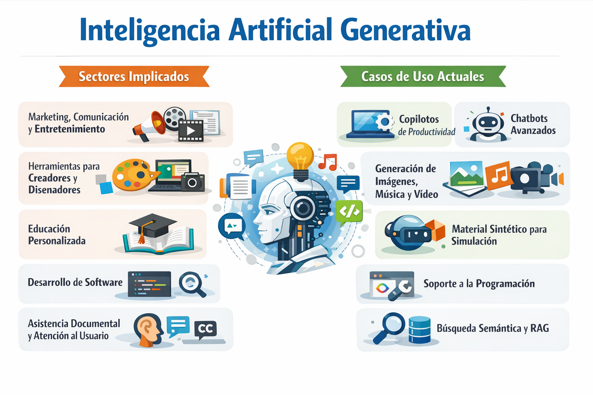
La Inteligencia Artificial Generativa cuenta con aplicaciones prácticas en numerosos sectores, por ejemplo:
Además, cada vez aparecen más casos de uso prácticos, como por ejemplo:
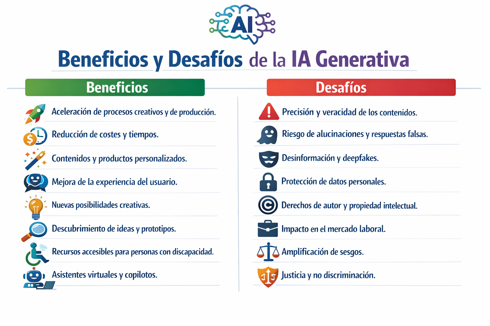
La Inteligencia Artificial Generativa aporta múltiples beneficios, entre los que destacan:
La Inteligencia Artificial Generativa también llega acompañada de desafíos importantes:
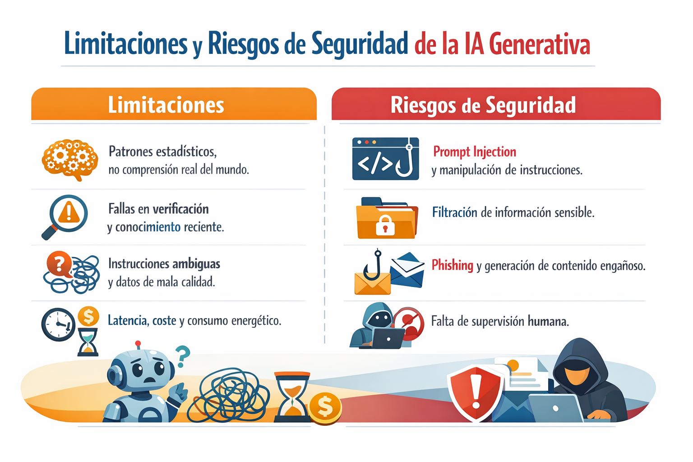
La Inteligencia Artificial Generativa presenta todavía hoy varias limitaciones:
La Inteligencia Artificial Generativa también implica riesgos de seguridad relevantes:
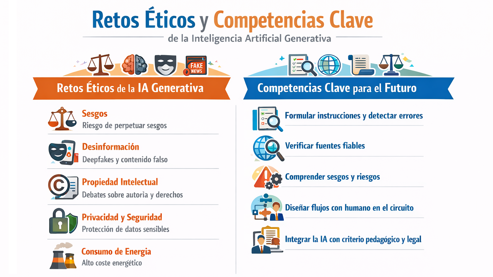
La Inteligencia Artificial Generativa plantea importantes retos éticos, tales como:
De cara al futuro, y también al presente, conviene reforzar las siguientes competencias clave:
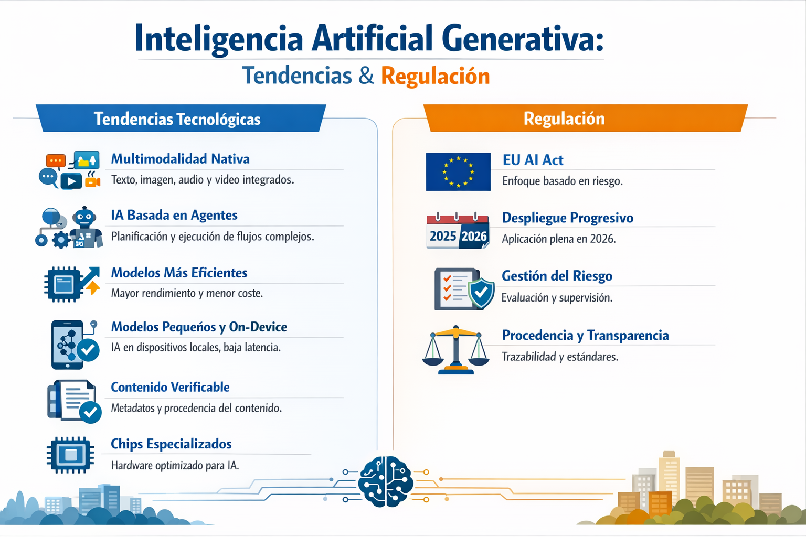
En la evolución de la Inteligencia Artificial Generativa se perfilan varias tendencias tecnológicas:
La expansión de la Inteligencia Artificial Generativa también ha impulsado su regulación:
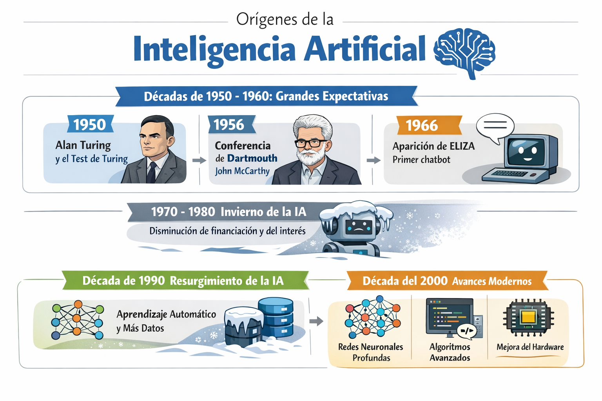
En las décadas de 1950 y 1960 surgieron grandes expectativas sobre el potencial de la Inteligencia Artificial, entre las que destacan los siguientes hitos:
Durante las décadas de 1970 y 1980, la Inteligencia Artificial vivió un período conocido como “invierno de la Inteligencia Artificial”, caracterizado por una disminución significativa de la financiación y del interés público debido a expectativas no cumplidas.
La década de 1990 marca un resurgimiento de la Inteligencia Artificial gracias a avances en aprendizaje automático, al aumento de la capacidad computacional y a una mayor disponibilidad de datos.
En la década de 2000 se produjeron avances en redes neuronales profundas, algoritmos complejos y mejora del hardware para entrenamiento.
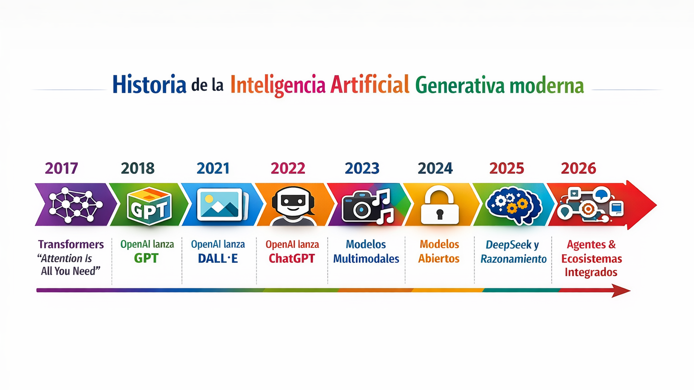
En los últimos años se ha producido una expansión exponencial de la Inteligencia Artificial Generativa:
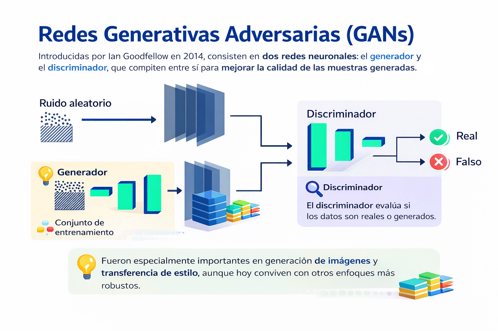
Introducidas por Ian Goodfellow en 2014, consisten en dos redes neuronales: el generador y el discriminador, que compiten entre sí para mejorar la calidad de las muestras generadas.
Fueron especialmente importantes en generación de imágenes y transferencia de estilo, aunque hoy conviven con otros enfoques más robustos.
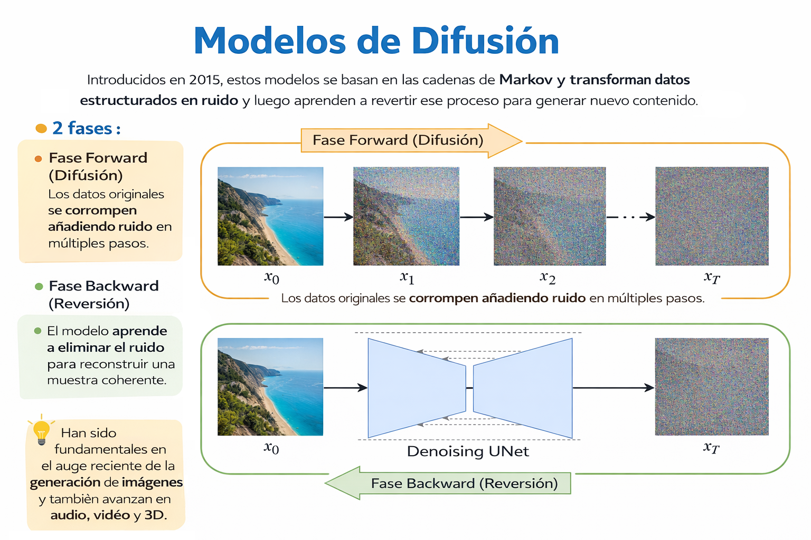
Introducidos en 2015, estos modelos se basan en las cadenas de Markov y transforman datos estructurados en ruido para después aprender a revertir ese proceso y generar nuevo contenido. Presentan, por tanto, 2 fases:
Han sido fundamentales en el auge reciente de la generación de imágenes y también avanzan en audio, vídeo y 3D.
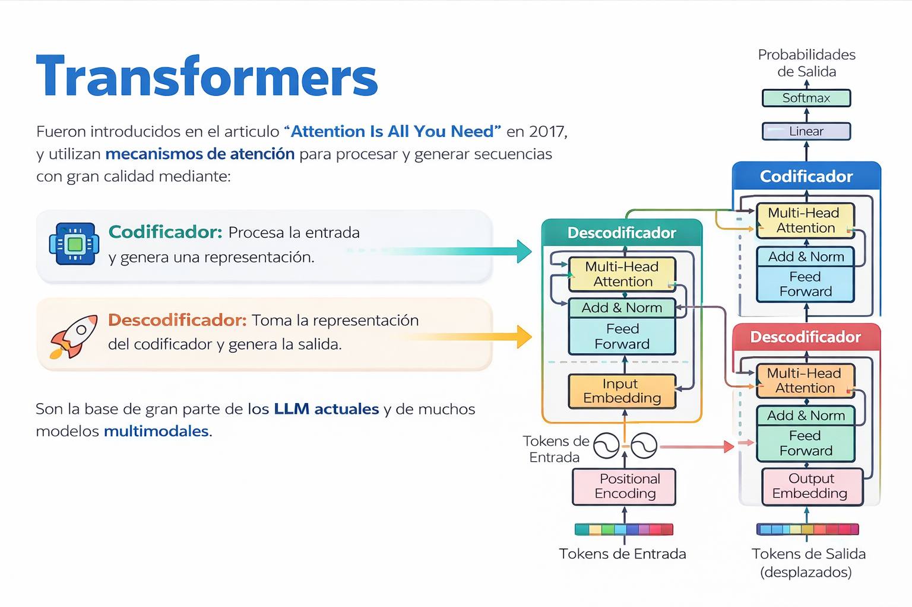
Fueron introducidos en el artículo Attention Is All You Need en 2017, y utilizan mecanismos de atención para procesar y generar secuencias con gran calidad mediante:
Son la base de gran parte de los LLM actuales y de muchos modelos multimodales.
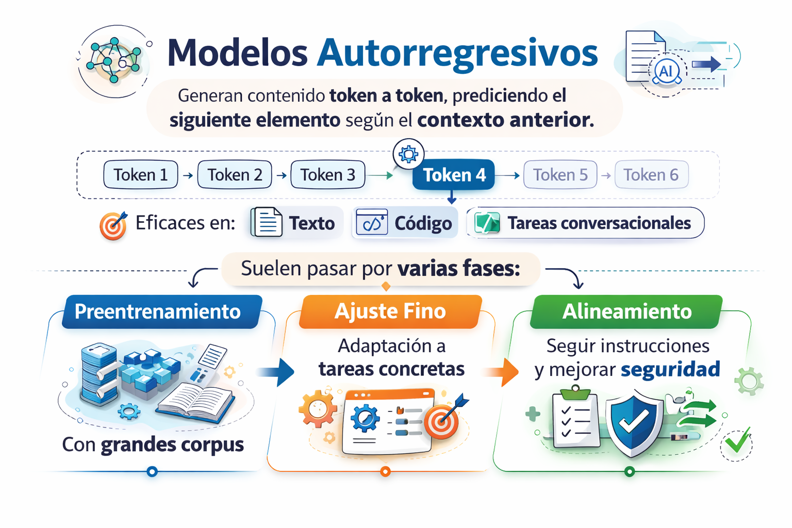
Son modelos que generan contenido token a token, prediciendo el siguiente elemento más probable a partir del contexto anterior.
Resultan especialmente eficaces en texto, código y tareas conversacionales.
Suelen pasar por varias fases:
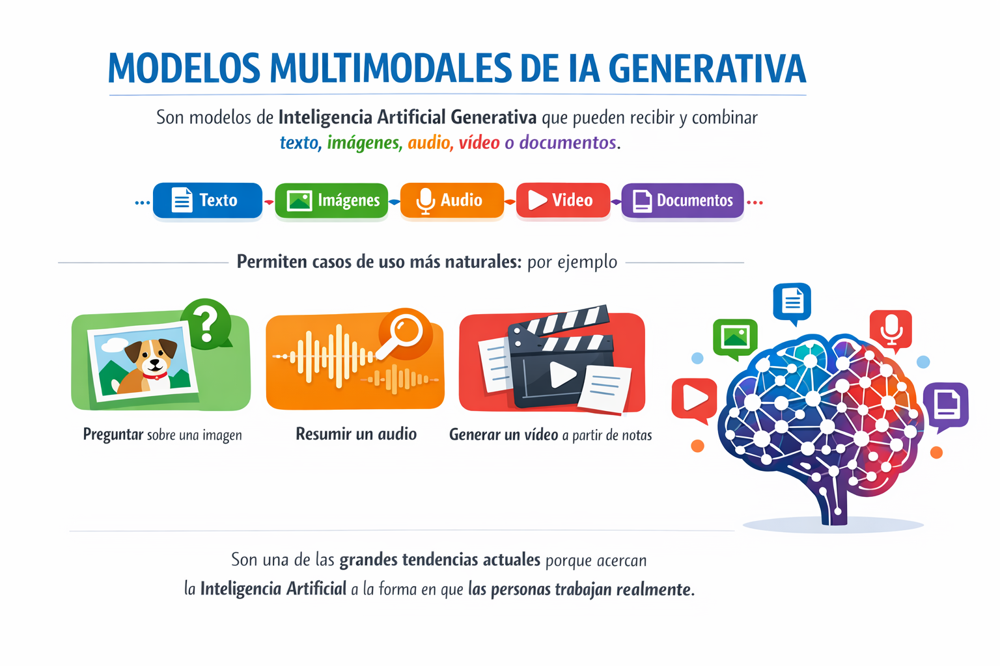
Pueden recibir y combinar texto, imágenes, audio, vídeo o documentos.
Permiten casos de uso más naturales: por ejemplo, preguntar sobre una imagen, resumir un audio o generar un vídeo a partir de notas.
Son una de las grandes tendencias actuales porque acercan la Inteligencia Artificial a la forma en que las personas trabajan realmente.
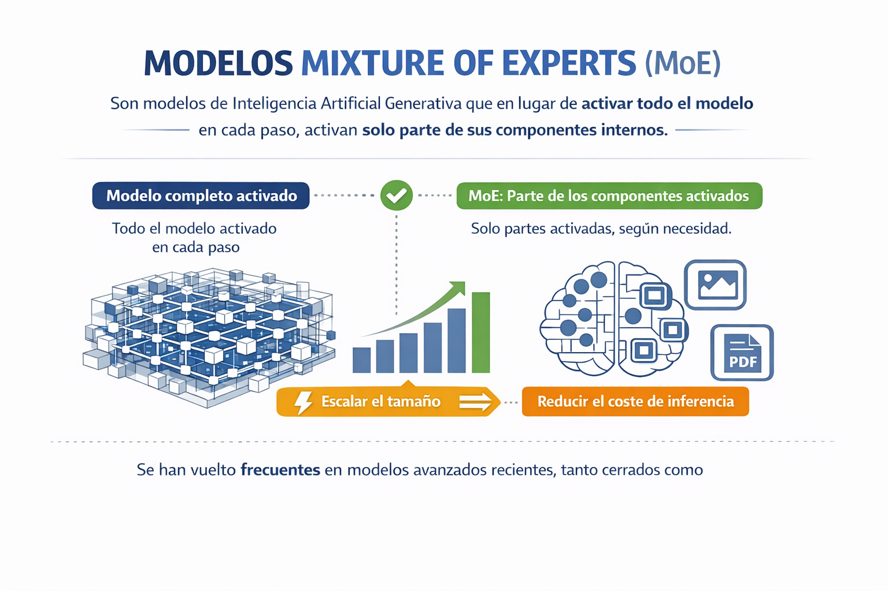
En lugar de activar todo el modelo en cada paso, activan solo parte de sus componentes internos.
Esto permite mejorar la eficiencia computacional y escalar el tamaño del modelo sin aumentar proporcionalmente el coste de inferencia.
Se han vuelto frecuentes en modelos avanzados recientes, tanto cerrados como abiertos.
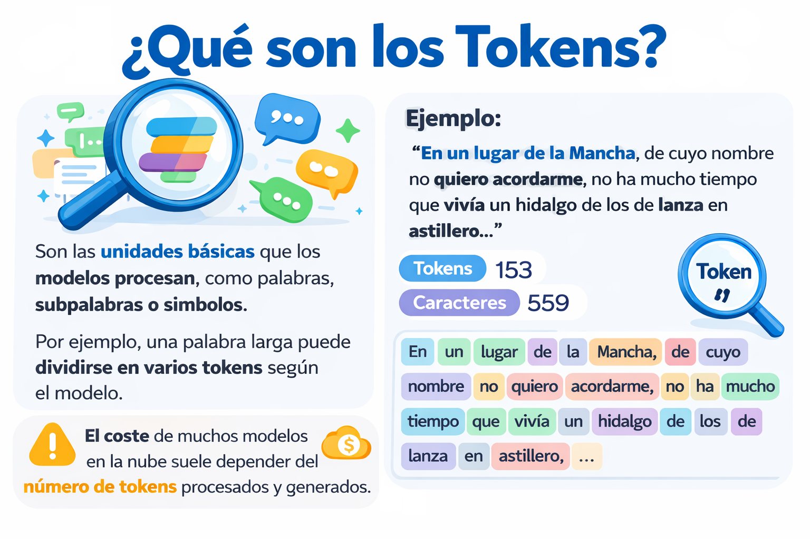
Son las unidades básicas que los modelos procesan, como palabras, subpalabras o símbolos. Por ejemplo, una palabra larga puede dividirse en varios tokens según el modelo. El coste de muchos modelos en la nube suele depender del número de tokens procesados y generados.
https://platform.openai.com/tokenizer
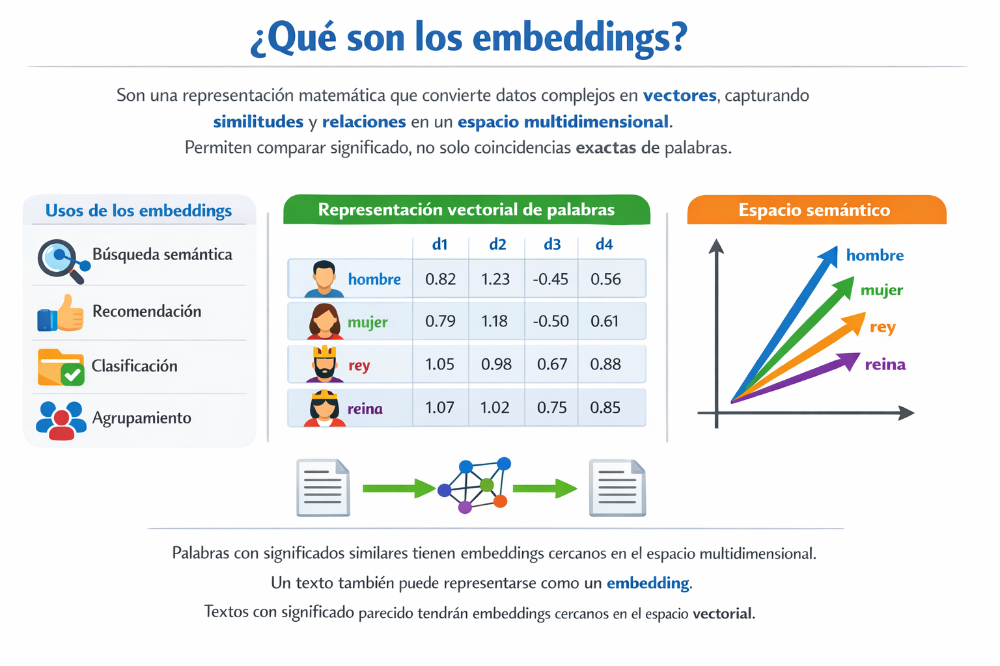
Son una representación matemática que convierte datos complejos en vectores, capturando similitudes y relaciones en un espacio multidimensional. Resultan fundamentales para tareas como búsqueda semántica, recomendación, clasificación y agrupamiento. Permiten comparar significado, no solo coincidencias exactas de palabras.
Dos palabras con significados parecidos tendrán embeddings situados cerca dentro de su mismo espacio multidimensional. Además, al ser vectores, si sumamos los embeddings de un texto obtenemos otro embedding que representa su significado global, de modo que la representación en forma de embedding de dos textos similares tenderá a situarse próxima dentro de ese espacio multidimensional.
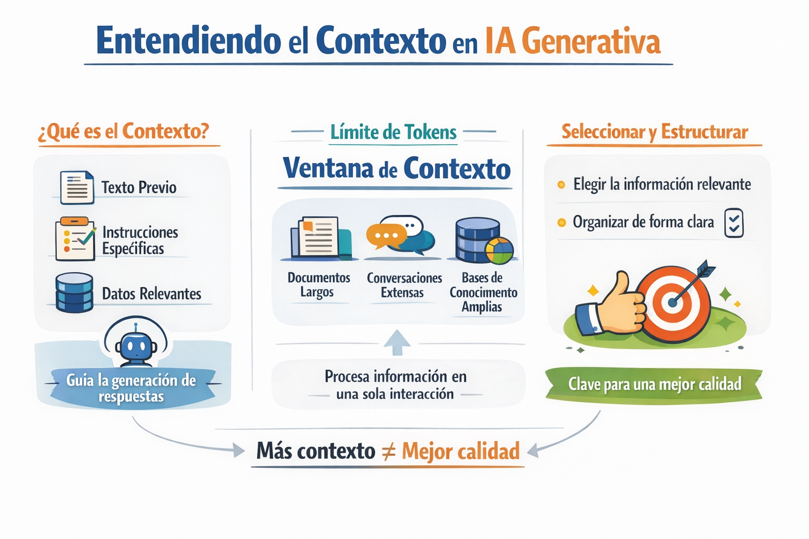
Se refiere a la información proporcionada como entrada que guía la generación de respuestas. El contexto incluye el texto previo, las instrucciones específicas y datos relevantes que ayudan al modelo a entender el propósito y mantener la coherencia.
Los modelos tienen un límite de tokens de contexto que pueden procesar en una sola interacción, lo que se conoce como ventana de contexto. Una ventana mayor permite trabajar mejor con documentos largos, conversaciones extensas o bases de conocimiento amplias.
Aun así, disponer de mucho contexto no garantiza por sí solo una mejor calidad: también importa cómo se selecciona y estructura la información de entrada.
Es la instrucción o entrada que damos al modelo. Un buen prompt suele especificar:
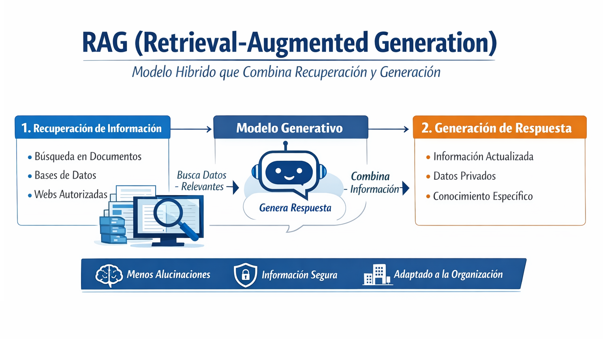
Es una técnica que combina un modelo generativo con un sistema de recuperación de información. Antes de responder, el sistema busca fragmentos relevantes en documentos, bases de datos o webs autorizadas. Resulta muy útil para reducir alucinaciones y trabajar con información actualizada, privada o específica de una organización.
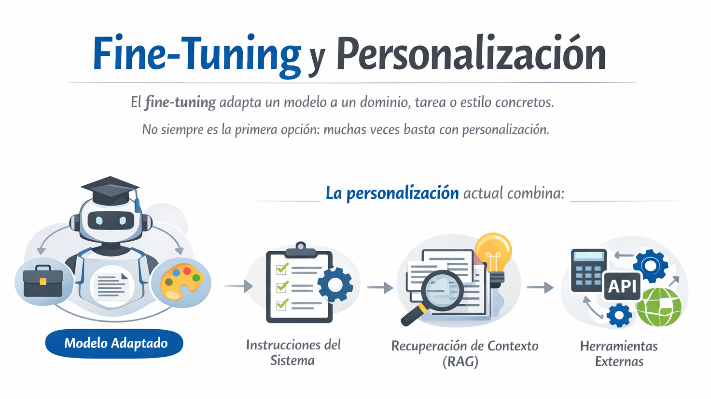
El fine-tuning adapta un modelo a un dominio, tarea o estilo concretos. No siempre es la primera opción: en muchos casos basta con personalización.
La personalización actual suele combinar: - Instrucciones del sistema. - Recuperación de contexto (RAG). - Herramientas externas.
Los modelos actuales ya no solo generan texto: también pueden usar herramientas, como por ejemplo: - Consultar la web. - Ejecutar código. - Buscar en archivos. - Llamar a APIs. - Rellenar formularios o automatizar pasos.
Esto amplía mucho su utilidad práctica, pero también introduce retos de seguridad, permisos y trazabilidad.
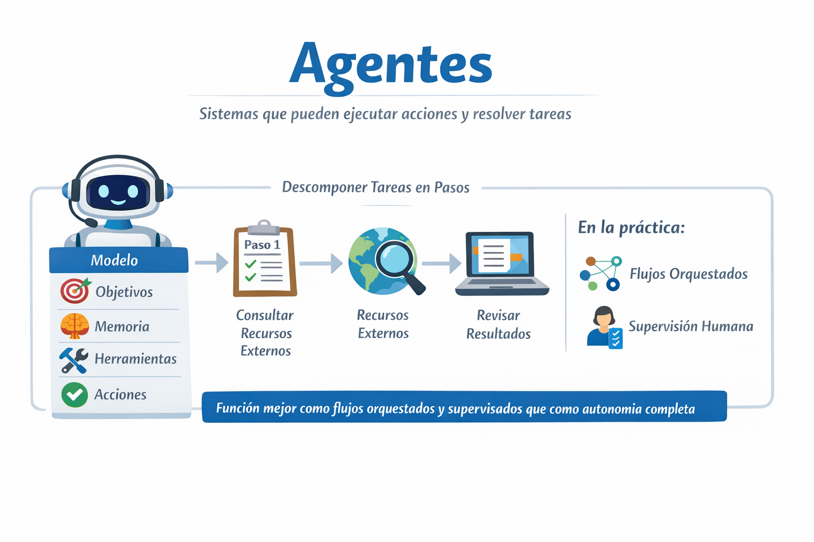
Un agente es un sistema que combina un modelo con objetivos, memoria, herramientas y capacidad de ejecutar acciones. Puede descomponer una tarea en pasos, consultar recursos externos y revisar resultados. En la práctica, muchos “agentes” actuales funcionan mejor como flujos orquestados y supervisados que como autonomía completa.